Next: Parabolic wave
Up: Fourier series of the
Previous: Fourier series of the
Contents
Index
First we apply this to the sawtooth wave 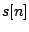. For 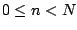 we have:
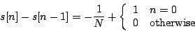
Ignoring the constant offset of 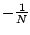, this gives an
impulse,
zero everywhere except one sample per cycle. The summation in
the Fourier transform only has one term, and we get:
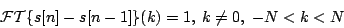
We then apply the difference formula backward to get:
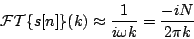
valid for integer values of  , small compared to
, small compared to  , but with
, but with  .
(To get the second
form of the expression we plugged in
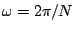 and 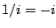.)
.
(To get the second
form of the expression we plugged in
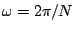 and 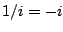.)
This analysis doesn't give us the DC component
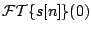,
because we would have had to divide by  . Instead, we can evaluate the DC
term directly as the sum of all the points of the waveform: it's approximately
zero by symmetry.
. Instead, we can evaluate the DC
term directly as the sum of all the points of the waveform: it's approximately
zero by symmetry.
To get a Fourier series in terms of familiar real-valued sine and cosine functions,
we combine corresponding terms for negative and positive values of . The
first harmonic (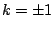) is:
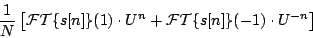
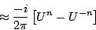
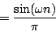
and similarly the th harmonic is
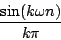
so the entire Fourier series is:
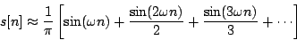
Next: Parabolic wave
Up: Fourier series of the
Previous: Fourier series of the
Contents
Index
Miller Puckette
2006-12-30